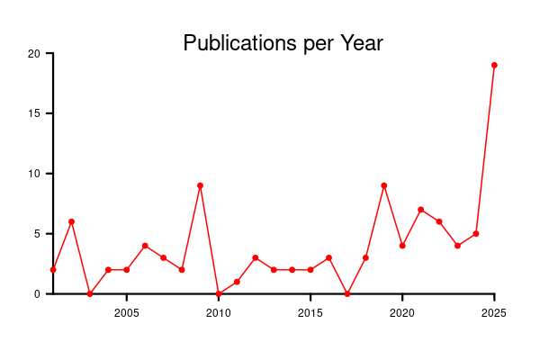

I am not sure if it is a common phenomenon but my intuition is that it is.
First some personal context: the Micropaleontology lab at the Museum für Naturkunde Berlin revolved around David Lazarus, the curator of the Micropaleontology collection. For many years, it was just him plus an occasional student. Then I did my PhD there between 2008 and 2012, and (over)stayed for a few postdocs afterwards. During most of that time it was just the two of us. Then Gayane joined us in 2018 with a significant grant from the MOPGA-GRI which gave us the latitude to expand the lab with two doctoral students. At our peak we were still a very small lab with only 5 persons. Dave then retired in 2021 and our grant arrived to term end 2022. While I stayed around an extra year as a guest scientist and the two students needed a couple more years to finish their PhD, and the Museum was nice enough to offer us Guest status for as long as we needed, the lab is for all intent and purposes defunct as of 2023/2024.
It is thus particularly striking that 2025 has been, by a wide margin, our most productive years in term of paper published.

And I can't imagine that we are the only ones in that case. While employment and funding cycles usually work on a 1, 2 or 3 (and very rarely as in our case 5) years, science and collaborations have their own rythmn. Publishing a finished paper itself can take up to 3 years in some case (because of rejections, resubmissions, lengthy review processes and lengthy typesetting/proofreading). But when your employment/grant ends, it's not as if you can just stop where you were: you do have an obligation (moral or in many cases legal) to publish your findings. In addition to being quite taxing when changing career, it also give rise to this weird zombie-lab phenomenon where a lab keeps publishing long after its demise.